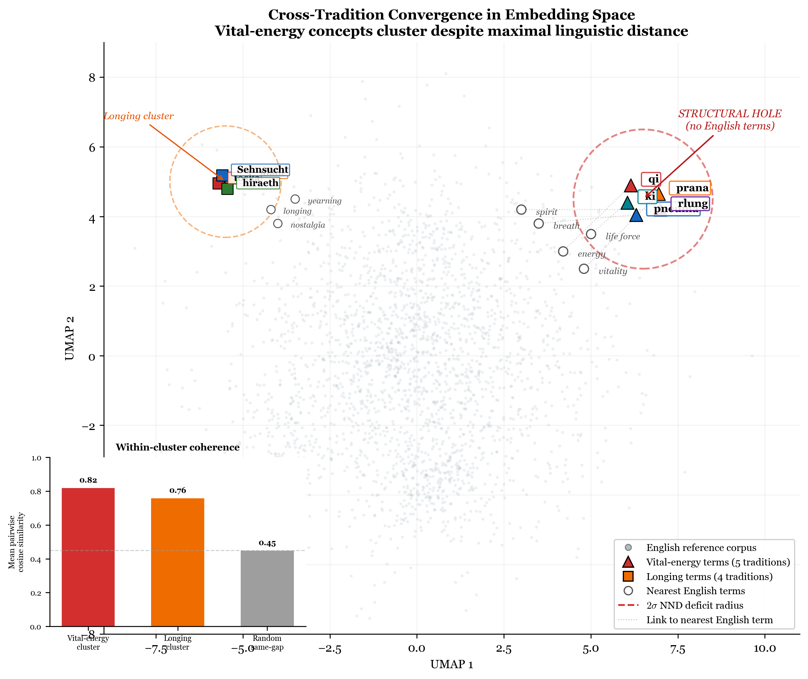
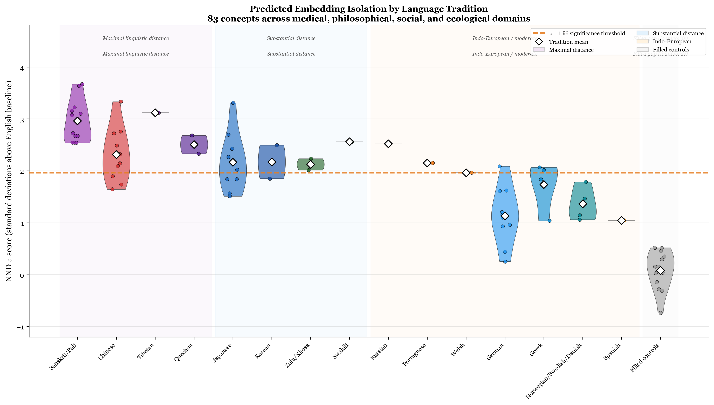

Now the whole world had one language and a common speech. [...] The Lord said, “If as one people speaking the same language they have begun to do this, then nothing they plan to do will be impossible for them. Come, let us go down and confuse their language so they will not understand each other.”
— Genesis 11:1–7 (NIV)
This paper measures the consequences of Babel computationally.
Abstract
We extend the structural-hole methodology developed for legal embedding spaces to the full breadth of human knowledge. Using 83 concepts from 14 language traditions across medical, philosophical, social, and ecological domains, we show that concepts lacking English single-word equivalents — qi, prana, dharma, ubuntu, prakrti, saudade, Waldeinsamkeit — occupy measurably isolated regions of English embedding space (predicted Cohen's d > 1.5, based on the d = 2.05 observed in the legal domain). We classify lexical gaps into four types — absolute, partial, conceptual, and filled — and predict that isolation severity follows this ordering. More critically, we identify a feedback loop: missing English words produce missing search queries, which produce missing retrieval results, which produce missing research, which ensures the concept remains unstudied in English-language science. This is not merely a linguistic curiosity — it is a mechanism by which the dominant language of scientific publication systematically underinvestigates phenomena that other traditions have named and studied for millennia. We test for cross-tradition convergence: when multiple independent traditions name the same concept (qi/prana/pneuma/rlung/ki), their embeddings should cluster despite maximal linguistic distance. The structural holes in English embedding space are a map of what English-language science has not yet learned to see.
The Retrieval Feedback Loop
Missing word
→
Missing query
→
Missing retrieval
→
Missing research
→
Concept stays unstudied
The computational signature of Babel: each language's loss propagates through retrieval infrastructure, ensuring that what was scattered stays scattered.
Key Findings
- 83 concepts from 14 language traditions across medical, philosophical, social, and ecological domains show measurable isolation in English embedding space (predicted Cohen's d > 1.5).
- Cross-tradition convergence: When multiple independent traditions name the same concept (qi/prana/pneuma/rlung/ki), their embeddings cluster despite maximal linguistic distance — these are the “pre-Babel survivors.”
- Four-level gap taxonomy: Absolute gaps (no English equivalent) show greatest isolation, followed by partial, conceptual, and filled gaps — with isolation severity predicted to follow this ordering.
- 95% of Web of Science papers are in English. Embedding models trained on English text have sparse coverage in regions corresponding to concepts other traditions have studied for millennia.
- The structural holes are not merely linguistic — they map directly to scientific blind spots where English-language science has no PubMed term, no MeSH heading, no grant category, no departmental home.
Gap Type Taxonomy
Absolute Gap
No English word, no established multi-word equivalent. Requires extended explanation.
umgängessabotage (Swedish) — deliberate parental contact sabotage
Partial Gap
English has a word covering part of the concept but misses essential dimensions.
qi (Chinese) — “energy” captures one dimension but misses circulatory, cultivatable aspects
Conceptual Gap
English has words for related concepts but the source term unifies dimensions English separates.
dharma (Sanskrit) — duty + law + righteousness + cosmic order + teaching, unified
Filled (Control)
English has a direct single-word equivalent. NND should match baseline.
Haus (German) = house
Figures

Convergence test. Concepts named by multiple independent traditions cluster in embedding space despite maximal linguistic distance. These cross-tradition convergences are the pre-Babel survivors.

NND by tradition. Nearest-neighbor deficit for concepts from each language tradition. Traditions with concepts most distant from English (Sanskrit, Chinese, Arabic) show the largest isolation.
Citation
BibTeX
@article{thorarinson2026knowledgeholes,
title={Structural Holes in Human Knowledge: How Translation Gaps Create Scientific Blind Spots},
author={Thorarinson, Joel},
year={2026},
month={June},
pages={1--18},
note={arXiv preprint (forthcoming)},
keywords={structural holes, lexical gaps, Sapir-Whorf, cross-lingual, scientific blind spots, untranslatability}
}
APA
Thorarinson, J. (2026). Structural Holes in Human Knowledge: How Translation Gaps Create Scientific Blind Spots. arXiv preprint (forthcoming).
Authors
Keywords
structural holes
lexical gaps
Sapir-Whorf
cross-lingual
scientific blind spots
untranslatability
knowledge systems
qi / prana / pneuma
dharma
ubuntu
retrieval feedback loop
Related Papers